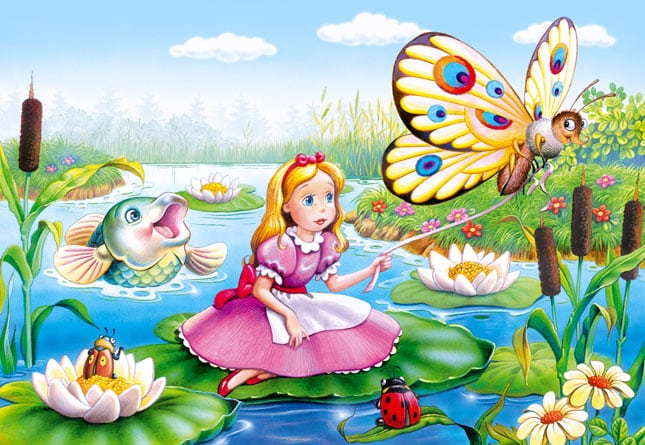

Degețica
H.C. Andersen
În urmă cu mult timp, într-un tărâm îndepărtat, o bătrână stătea în balansoarul ei și se gândea cât de multă bucurie i-ar aduce un
copil.Apoi a auzit o bataie în ușă și s-a dus să deschidă. O femeie statea în prag și i-a spus „Dacă mă lași să dorm aici la noapte ,
îți voi îndeplini o dorință.” Bătrâna i-a deschis pentru că i se făcuse mila de femeie și pentru că știa exact ce dorința voia să-și
pună: un copil. A hrănit-o pe musafira și a lăsat-o să-si facă o baie, apoi a luat seama că era foarte frumoasă.
Femeia a dormit bine peste noapte, iar cand s-a trezit, înainte să plece, a întrebat-o pe gazda primitoare:
– Ei, ce dorință vrei să îți îndeplinesc?
Femeia și-a amintit cum majoritatea celor pe care îi întâlnea își doreau bogății, putere și frumusețe. Iar când i-a auzit dorința
femeii, nu i-a venit a crede.
– Aș vrea să am un copil.
Femeia a pus o sămânță micuță în mâna bătranei și i-a spus:
– Plantează această sămânță, ud-o cu grijă, vegheaz-o și iubește-o din toată inima. Dacă faci toate acestea, vei avea un copil.
Bătrâna i-a ascultat sfaturile cu sfințenie. O săptămână mai tarziu, în locul seminței era o floare galbenă. A doua zi floarea s-a
deschis, iar din floare a iesit o fetiță de dimensiunea degetului mare al bătrânei. Astfel, femeia a numit-o Degețica.
Bătrâna i-a cusut o rochie micuță, cu fire aurii și i-a pregătit patul într-o coajă de nucă. Amandoua erau fericite și se bucurau
una de prezența celeilalte.Într-o bună zi, când Degețica s-a dus la culcare, o broască a sărit în camera ei, pe geam, și a spus
– Tu vei fi mireasa perfectă pentru fiul meu.
Broasca a inhatat-o pe Degețica și a dus-o pe o frunza de nufăr, apoi a plecat să-și caute fiul.
Degețica a început să plângă atât de tare, că peștii din lac au auzit-o și au început să roadă rădăcina nufărului, ca ea să poată
pluti pe lac. Ore întregi a plutit Degețica pe frunza de nufăr, pănă cănd a ajuns la mal. În timpul verii, se hrănea cu fructe de padure
și cu roua frunzelor. Dar a venit iarna friguroasă și a fost nevoită să-și găsească un adăpost. Un șoricel prietenos a lăsat-o să stea
la el, însă i-a explicat că nu o poate gazdui prea mult și că va trebui să se mărite cu un prieten de-al șoricelului.
Plecând să-și cunoasca viitorul soț, Degețica a ajuns într-un tunel unde a găsit o pasăre ce părea fără suflare. Fetei i s-a facut milă
de ea și a vrut să o ingroape, însă și-a dat seama că pasărea era doar rănită.
A îngrijit-o până ce, la venirea primăverii, pasarea și-a revenit complet și a zburat în văzduh.
Primavara și vara au trecut, iar Degețica, deși nu-și dorea, se pregătea de nunta cu viitorul ei soț, soricelul. Exact înainte de nuntă,
a auzit un ciripit familiar: era pasarea pe care ea o vindecase:
– Poti veni cu mine, în țările calde, i-a spus pasărea.
Degețica a sarit pe spatele păsării și a zburat către țările calde. Oamenii de acolo, care erau la fel de mici ca ea, au numit-o Erin.
Acolo Erin a întâlnit un prinț și cei doi au trăit fericiți împreună, până la adânci bătrâneți.

Pagina principală
Pagina 1
Pagina 2
Pagina 3